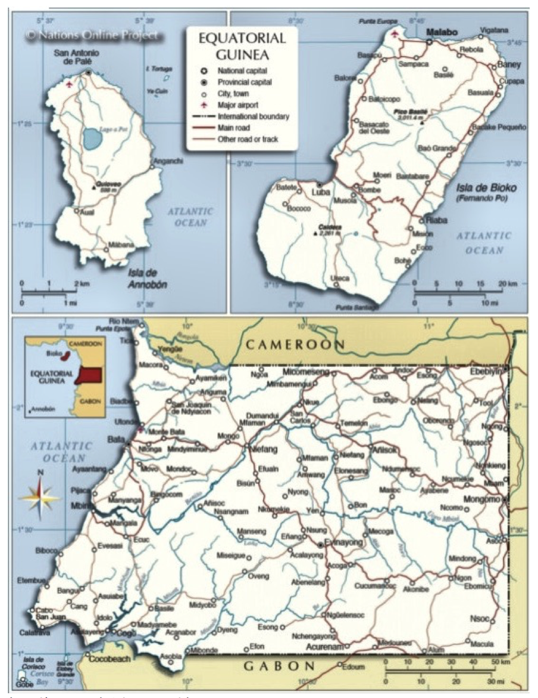
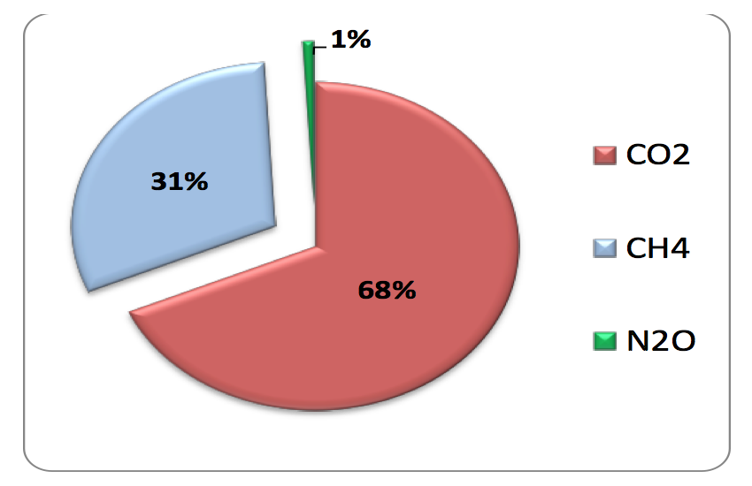
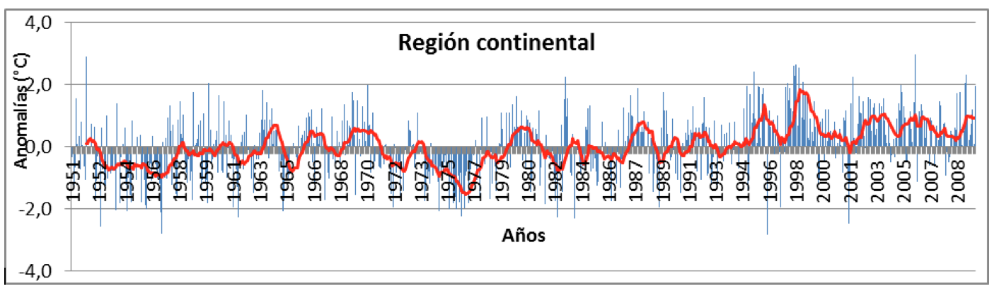

MINISTERIO DE PESCA Y MEDIO AMBIENTE
CONTRIBUCIONES PREVISTAS Y DETERMINADAS A NIVEL NACIONAL (CONTRIBUCIONES NACIONALES)(CPDN) |
Malabo, Septiembre de 2015
Una de las exigencias de la decimonovena Conferencia de las Partes (CoP-19) de la Convención Marco de las Naciones Unidas sobre Cambio Climático (CMNUCC), celebrada en la ciudad de Varsovia (Polonia) en el año 2013, fue invitar a los países Partes a realizar esfuerzos por iniciar e intensificar los preparativos para la elaboración de las llamadas Contribuciones Previstas y Determinadas a Nivel Nacional (CPDN o INDCs en inglés por sus siglas). Con el único propósito de lograr un compromiso mundial que tiende a reducir al máximo las emisiones de Gases de Efecto Invernadero (GEI), en un acuerdo mundial vinculante.
La convención ha considerado el año 2015 como clave en las negociaciones y de mucha expectativa para el futuro de la Madre Tierra, dependiendo del Acuerdo que se adopte sobre el Cambio Climático Global; la Convención Marco de las Naciones Unidas sobre Cambio Climático, tiene el mandato de la COP17, celebrada en Durbán (Sudáfrica) para aprobar en la COP21 de París un Acuerdo Vinculante, aquello fue el tema prioritario de la COP20, celebrada en Lima (Perú), en diciembre de 2014, adoptando así la decisión 1/COP20. Como un indicador del apoyo políticos de las partes, se ha tomado una iniciativa de ejecución de las CPDN, teniendo como prioridad su alcance, definición, obligatoriedad así como su transparencia.
Para garantizar la aplicabilidad de lo expuesto, la mayoría de los países Partes de la Convención están dispuestos a participar en la lucha común contra el cambio climático. En efecto, se ha determinado que las Contribuciones sean presentadas a la Secretaría de la Convención a más tardar el 1º de octubre del año 2015, para su consideración en la elaboración del Acuerdo Final. Razón por la cual, la República de Guinea Ecuatorial como Parte de la Convención ha tenido a bien elaborar y presentar esta Contribución; la misma refleja la realidad del país y justifica la voluntad política del Gobierno para luchar contra los efectos del cambio climático.
Establecer los mecanismos para la reducción de las emisiones de Gases de Efecto Invernadero (GEI) a largo plazo; situar la progresión de los países en la lucha contra cambios climáticos en el período 2030-2050 en coherencia con la trayectoria post 2050, con el propósito de contener el aumento del Calentamiento Global por debajo de 2ºC en relación al periodo preindustrial.
La Contribución de la República de Guinea Ecuatorial ha sido elaborada bajo la supervisión del Ministerio de Pesca y Medio Ambiente, a través de la Dirección General de Medio Ambiente a través del con la colaboración de: Grupo de Expertos de la Coordinación Nacional de Cambios Climáticos y la Asistencia Técnica Internacional. Los datos recogidos en la documentación son de origen nacional e internacional, con un enfoque participativo de actores clave como: los Representantes de Ministerios Sectoriales, sociedad civil, Organización de la Sociedad Civil, el Sector Privado, Cooperación Bilateral y Multilateral.
Por su carácter, las contribuciones previstas y determinadas a nivel nacional en la República de Guinea Ecuatorial se articulan en dos ejes temáticos principales:
Para ello, es indispensable garantizar una financiación tanto nacional como internacional, para así hacer frente a las necesidades identificadas.
Situada cerca de la línea del ecuador en el Golfo de Guinea, la República de Guinea Ecuatorial; limita al Norte con la República del Camerún, al Sur y al Este con Gabón y al Oeste con el Océano Atlántico Ecuatorial, Comparte las fronteras marítimas con Nigeria, Sao Tomé y Príncipe, Gabón y Camerún (Figura 1). El país está comprendido por dos regiones: La región insular y la región continental que comprende gran parte de la superficie del país; la otra parte insular que comprende las islas de Bioko, Annobón situada en el Hemisferio Sur, así como los islotes de Corisco, Elobey Grande, Elobey Chico y Mbañe. Tiene una extensión superficial total de 28.051,46 km2.
El País dispone de una Zona Económica Exclusiva (superficie marítima) de 314.000 km², 11 veces superior a la superficie de la tierra firme; con 600 km de costa marítima, la cual por lo general es accidentada, sobresaliendo algunas Bahías y cabos.
El clima de Guinea Ecuatorial es de “selva tropical lluviosa” según Köppen, con rasgos de “sabana tropical” en su extremo más oriental. Las condiciones geográficas que modifican de forma significativa el clima del territorio en su parte continental (Río Muni) son la existencia de la costa y el relieve de la porción sur, principalmente en la parte sudeste donde se encuentra situado el Monte Mitra (1200 m). La población de Guinea Ecuatorial es de 1.014.999 habitantes, siendo más de 70% la población vive el en área rural rural y la economía reposa en gran medida sobre la extracción del petróleo y el gas licuado, así como la exportación de madera, cacao y café.

Ilustración 1.-Mapa de Guinea Ecuatorial
Cabe resaltar que, en el contexto mundial, el aumento de las emisiones de CO2 se aceleró después del año 2000, incrementándose en un 35% entre 2000 y 2011, comparado con el 10% del aumento registrado entre 1990 y 2000. Esto se debió principalmente al rápido aumento de las emisiones en las regiones en desarrollo. Además, en las regiones desarrolladas, el promedio de emisiones de CO2 per cápita ha sido considerablemente más alto que en las regiones en desarrollo (Banco Mundial, 2011). [Ver: Banco Mundial. Atlas mundial de datos (2000-2010). Disponible en la página: http://data.worldbank.org/data-catalog/world-development-indicators. ]
A pesar de las tendencias mundiales, sin embargo, en Guinea Ecuatorial, hubo una reducción considerable ya sean vistas en cantidades totales per cápita como por cada dólar del PIB. Es de constatar que, de los niveles de 10,6 toneladas métricas per cápita en 2003, logró reducir las emisiones hasta los niveles de 6,7 toneladas métricas per cápita en 2010 por la reducción de la tala de arboles y entre otras medidas (Banco Mundial, 2011) [Ibit].
Para la planificación del Inventario de Gases de Efecto Invernadero en la República de Guinea Ecuatorial, algunos sectores fueron seleccionados en base al nivel de sus emisiones.
Fuente: MPMA. Inventario de GEI, Guinea Ecuatorial 2013. Capitulo 3, tabla 3.2 de la pagina 6
La poca importancia que tienen las emisiones de CO2 por los bosques en el país hace que cuando en el análisis se incorporan las emisiones y remociones del sector Cambio de Uso de la Tierra y Silvicultura, las emisiones netas del país se reducen muy poco en comparación con las emisiones brutas.

Ilustración 3.-Emisiones de CO2 eq (Gg) por GEI. Guinea Ecuatorial,2013.
Como puede apreciarse en la ilustración 3, en las emisiones de CO2eq, el Dióxido de Carbono (CO2) y el Metano (CH4) tienen el mayor aporte al calentamiento, mientras que los aportes de Óxido Nitroso (N2O) son prácticamente despreciables en el país con solo un 1 % de las emisiones.
En la ilustración 4 se muestran los resultados obtenidos en el cálculo de las emisiones per cápita anuales de CO2 y GEI para el año evaluado en el informe de 2013; se utilizan para este cálculo las emisiones brutas de CO2 (en Gg de CO2) y las emisiones brutas agregadas de GEI (en Gg CO2eq) que son los índices que se utilizan, internacionalmente, con mayor frecuencia para este objetivo.
Ilustración 4.Emisiones per cápita de CO2 (t CO2/persona), y otros GEI (t CO2 – eq/persona). Guinea Ecuatorial, 2013.

A pesar de que los niveles de las emisiones nacionales de CO2 han disminuido en el periodo 2003- 2010, sin embargo hay indicios de que los impactos pueden ser latentes. En efecto, el cambio de los factores ambientales se hace cada vez más agudo tanto la Región Insular como en la Continental, tomando como referencia los mismos intervalos temporales.


Ilustración 5.-Variación de los valores mensuales de la temperatura superficial para el periodo 1951-2019. La línea roja representa una media móvil de 12 ptos. Fuente: Ministerio de Pesca y Medio Ambiente, 2013. PANA. Figura nº12 de la página 34.
Guinea Ecuatorial al carecer de estaciones meteorológicas para la medición y evaluación de los factores climáticos (agrometeorología, hidrometeorologia, isobaras eólicas, etc.), está limitada en conocimientos sobre cambio climático y sus efectos. En base a los pronósticos realizados, está expuesta a una mayor variabilidad de las precipitaciones (sequía en general, mayores chubascos y días más soleados), temperaturas más elevadas y un incremento del nivel del mar (junto con tormentas más frecuentes y oleaje). La población está confirmando cambios en el comportamiento del clima como tormentas más frecuentes, inundaciones, sequía de manantiales y por lo general temperaturas más elevadas (MPMA, PANA, 2013). Todo ello justifica su alta vulnerabilidad.
Se considera como sectores más vulnerables a los efectos del cambio climático: la agricultura, pesca, energía, vivienda, educación, saneamiento, drenajes, salud y medio ambiente. Las pérdidas derivadas de estos daños a pesar de ser muy considerables, actualmente son difíciles de cuantificar económicamente a falta de registros estadísticos.
Guinea Ecuatorial es un país en vía de desarrollo, cuya economía depende exclusivamente de industrias extractivas y tiene que hacer frente a una serie de desafíos al desarrollo, como son: la pobreza, educación, salud, infraestructuras viales, etc. Aunque, en términos de emisiones, la República de Guinea Ecuatorial, representa menos del 0,1% de las emisiones mundiales, sin embargo, la tendencia de las emisiones de algunos sectores económicos son importantes, en especial la energía, emisiones de CO2 de la biomasa, procesos industriales extractivos y cambios de usos de la tierra.
En el año 2007, el Gobierno adoptó el Plan Nacional para el Desarrollo Económico y Social (PNDES) al Horizonte 2020, el cual encaja perfectamente con los Objetivos del Milenio para el Desarrollo y las ambiciones para la reducción de las emisiones de CO2; puesto que se apuesta por la diversificación de la economía, con un enfoque de la economía verde (el turismo, silvicultura, negocios, etc.).
En base a lo señalado anteriormente, la ambición de Guinea Ecuatorial es reducir en un 20% de sus emisiones para el año 2030, con respecto a los niveles de 2010; a fin de alcanzar una reducción de 50% para el año 2050. Eso, condicionado a que el apoyo sea favorable, previsible y, que se viabilice los mecanismos de financiamiento climático y se corrijan las distorsiones de los mecanismos de mercado existentes. Es necesario el apoyo técnico favorable y financiero favorable tanto del gobierno nacional como de la comunidad internacional.
El Gobierno de la República de Guinea Ecuatorial, consciente de que el cambio climático es un fenómeno a dimensión internacional, que constituye una prioridad y en el marco de su política de desarrollo, ha fijado acciones sobre la base de objetivos y orientaciones muy claras a través de las estructuras del Estado, colectividades locales, el sector privado así como organizaciones de la Sociedad Civil. Dicha orientación se basa en: medidas de adaptación y atenuación.
Con la adopción del Plan de Acción Nacional de Adaptación al cambio climático (PANA) en el año 2013, el país desarrolla la estrategia para fomentar la resiliencia al cambio climático en todos los sectores, con propuestas concretas a corto y a mediano plazos. Entre las acciones propuestas se destacan:
El Gobierno va a fortalecer las iniciativas actuales en el sector eléctrico aprovechando los recursos renovables disponibles, destacándose así las siguientes acciones:
Tabla 1: Acciones de adaptación y sus costos estimativos (en millones de $US)
| Acciones | Costos estimativos | |
| 2015-2030 | 2030-2050 | |
| Realización de diagnosticos periodicos sobre la vulnerabilidad climatica a nivel nacional, conforme a los estandartes internacionales | 12,3 | 14,5 |
| Construcción de estaciones meteorologicas en todo el ámbito nacional para el buen seguimiento de los factores climaticos en cada zona de la administracion territorial | 17,5 | 13,5 |
| Instalacion de sistemas de alerta temprana para los riesgos climáticos y otras catástrofes naturales | 15,2 | 28,7 |
| Análisis periodicos de la capacidad de resiliencia de todas las infraestructuras acometidas y en curso | 11,5 | 22,3 |
| Ubicación de estaciones pluviométricas en las centrales hidroeléctricas para monitorear los cambios en las precipitaciones | 16,5 | 31,2 |
| Establecimiento de mecanismos para lograr la gestión integral de las cuencas hidrográficas | 12,7 | 25,3 |
| Fomento de sistemas de produccion agropecuaria con mejor resiliencia frente al cambio climatico | 13,5 | 17,3 |
| Restauración de diferentes ecosistemas susceptibles a perder su resiliencia | 15,3 | 18,5 |
| Total | 114,5 | 171,3 |
Tabla 2: Sectores de atenuación y sus costos estimativos (en millones de $US)
| Sectores | Costos estimativos | |
| 2015-2030 | 2030-2050 | |
| Sector Energía | 544,5 | 914,7 |
| Sector Transporte | 834,6 | 1324,5 |
| Sector Silvicultura, Agricultura y Cambio de Uso de Suelos | 623,7 | 836,3 |
| Sector Industrial | 1435,3 | 2356,8 |
| Sector Residuos | 235,2 | 523,5 |
| Total | 3673,3 | 5955,8 |
Tabla 3: Otras necesidades y sus costos estimativos (en millones de $US)
| Temáticas | Costos estimativos | |
| 2015-2030 | 2030-2050 | |
| Necesidades institucionales | 44,5 | 64,2 |
| Información, sensibilización y educación sobre cambio climático | 24,8 | 32,3 |
| Formación e investigación aplicada al cambio climático | 83,7 | 123,7 |
| Total | 153,0 | 220,2 |
7. NECESIDADES
| Equipo de elaboración de CPDN |
|---|
|
| Equipo de Revisión |
Excmo. Sr. Estanislao DON MALAVO: Ministro de Pesca y Medio Ambiente Excma. Sra. Adoración SALAS CHONCO: Secretaria de Estado de Pesca y Medio Ambiente Sr. D. Demetrio IVITI NSUGA (Ingeniero Técnico Agrónomo): Punto Focal de la Capa de Ozono |
| Citación del documento |
| Ministerio de Pesca y Medio Ambiente (MPMA). Contribuciones Previstas Determinadas a nivel Nacional. Malabo, Agosto de 2015. |
| Material de apoyo: (I) Informe sobre inventario nacional de gases de efecto invernadero de 2013, por el MPMA con el apoyo financiero de GEF; (II) Plan de Acción Nacional para la Adaptación al cambio climático (PANA), adoptado en 2013, por el MPMA gracias al apoyo financiero de GEF/PNUD; y (III) Programa de Desarrollo Socio-económico Horizonte 2020, Ministerio de Planificación y Desarrollo Económico; Primera Comunicación Nacional de Cambio Climático en Guinea Ecuatorial. (IV) Documento de proyecto “Energía sostenible para todos”-PIMS 5143. |